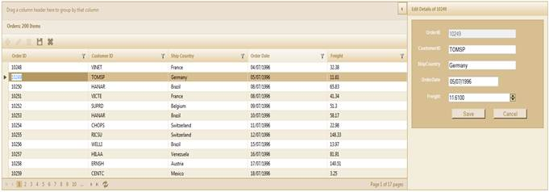
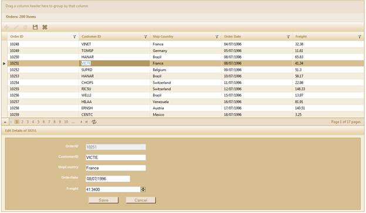
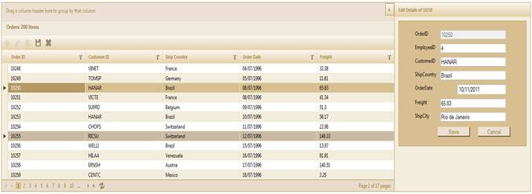
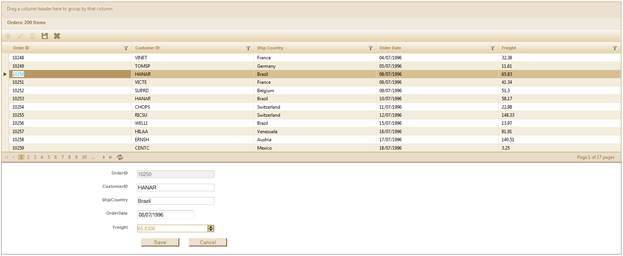

The External Form Edit Mode helps you to edit various data entries in the grid, one at a time, using an external edit form. It can contain the fields that you require, in the custom external form template that you would like to use.
This is different from the dialog editing mode in that it
allows you to see the other entries in the Grid while you are editing
one.
You can position the edit form either in the top-right corner (by
default), bottom-left left corner of the Grid; or in a custom location, using a
target ID, if you choose.
Use Case Scenario
This feature allows you to view the data you edit more clearly, while offering an uncompromised view of the other data entries in the grid.
Appearance and Structure
The following figures illustrate the appearance and structure of the ExternalForm EditMode feature, and its settings:

Figure 187: External Form Edit Mode with External Form in the top-right of the Grid

Figure 188: External Edit Form in the bottom-left of the Grid

Figure 189: External Form Edit Mode with Customized Template (Custom Fields in Grid)
If you have a customized template that you would like to use
for the external edit form, this feature allows you to use it. You may have new
fields and customized dimensions that you can use for the edit form.
 Note: The default skin overrides your template’s
skin.
Note: The default skin overrides your template’s
skin.

Figure 190: External Edit Form with Custom Position (Target ID)
When you set the target ID for the ExternalForm EditMode, you
will not only be able to customize the position of the edit form, but also the
skin used.
The target ID (of the element in the page) allows you to
place the edit form anywhere on the same page as the grid. If in case the
element doesn’t exist on the page, you will not be able to place the edit form
in that location.
Note: The custom skin of your edit form template
is not overridden by the default skin used by the edit form, if you choose this
option.
Where do I find the installed samples?
You can find the installed samples when you follow the below steps:
1. Go to sample browser.
2. Click Grid tab to launch ASP.NET MVC samples.
3. Select Editing>ExternalForm Editing.
 Properties
Properties